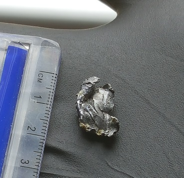
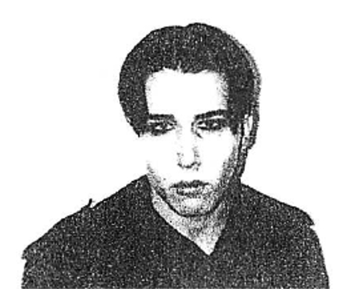
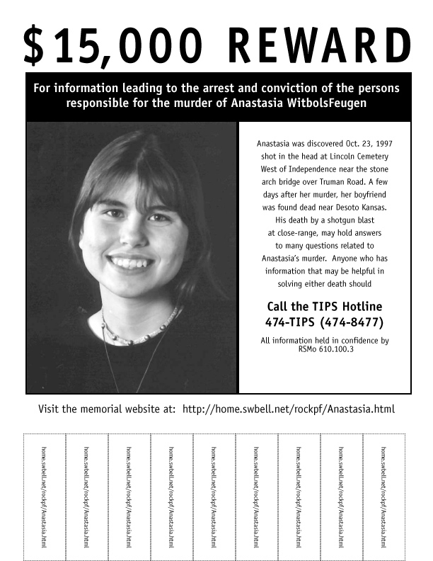
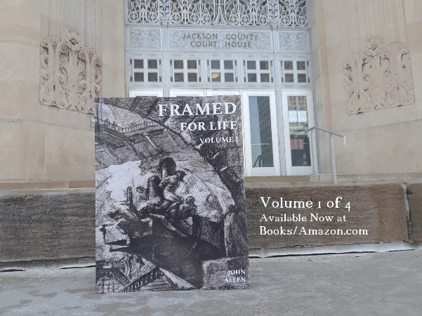
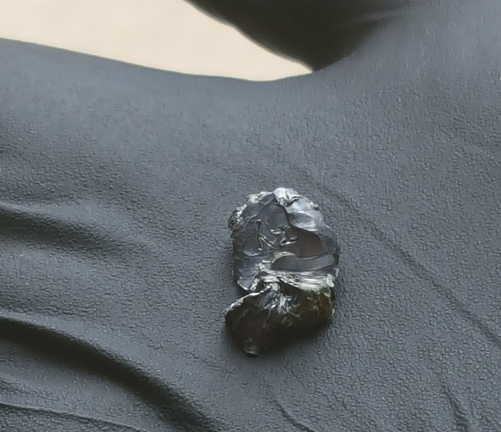

The First 48 Hours
Anastasia's body was found at 3:44 a.m. on October 23, 1997. Boyd Harlan, an investigator for the
Jackson County Medical Examiner, arrived at Lincoln Cemetery at 5:05 a.m. He reported several factors
that help determine a time of death, including a body's degree of rigor mortis (stiffening after death),
livor mortis (paling, as blood settles to the body's lowermost points), and eye clarity.
The observations made by Mr. Harlan at the scene were critical to the Medical Examiner's findings since
the ME only encountered Anastasia's body after it was transported to his offices. There were other facts
that Mr. Harlan could have recorded if he wanted to be thorough, which would have enabled the ME to
estimate Anastasia's time of death. She had apparently been killed within the previous several hours, so
taking her core temperature would have narrowed the time-of-death window even more. It might have shown
that Anastasia was still alive after Kelly and Byron were both home, miles away from Lincoln Cemetery,
and incapable of witnessing her death.
As it was, the ME left the death certificate's TIME OF DEATH field blank, even though authorities in
forensic pathology agree that Anastasia's "moderately formed," not fully developed rigor, plus her
clear, open eyes at the scene, both indicate a death roughly two to four hours before Mr. Harlan got
to Lincoln Cemetery. Despite expert consensus on these time-of-death indicators, the ME chose not to
assert that Anastasia most likely died near midnight.
A bullet fragment was found, tangled in Anastasia's hair during her autopsy. It was sent to the
Kansas City Regional Crime Lab, where it was weighed. A test of the lead's composition would have
ruled out the many types of firearms that could not have fired the bullet, but no tests were
performed at all. The absence of jacketing, wadding, or a shell — ammunition traits that would
eliminate shotguns and certain rifles — was never considered. No ballistics expert was consulted
during the course of the investigation.
Some resources referring to the clouding of open within approximately four hours of death:
Kelly and Byron voluntarily went to Jackson County Sheriff's Department (JCSD) headquarters for interviews
about the events of October 22, 1997. If the officers who spoke with Byron were at all suspicious, or
wanted to rule him out as a possible suspect, they could have swabbed him for gunshot residue, which can
stay on the hands for days after firing a weapon. If they had, Byron's innocence (or at least his lack
of involvement in Anastasia's death) would've been established at the outset.
The man who identified Anastasia from a photo shown to him on October 24, 1997, was a night mechanic
at the Amoco service station about 100 feet from where she got out of Justin's car. The area canvass
by JCSD Sgt. Joseph Becker was the only documented contact officers had with Mr. Rand. They never
interviewed him for details about the young woman he saw walking east at dusk, away from a
dark-colored car at the I-435/Truman Rd. traffic light on Anastasia's final evening. Mr. Rand's
description exactly matched Kelly and Byron's accounts of Anastasia's tantrum when she left them at
the light. His in-depth third-party account might have kept JCSD's homicide investigation from
drifting into the realm of speculation and gossip.
Since Byron's trial, three independent ballistics/firearms experts have concluded the 56.1-grain
bullet fragment's shape and size, plus the entry wound it created, mean Anastasia was shot with a
medium-power handgun, not a long-barreled gun like Kelly Moffett's story involved

witbolsfeugen-anastasia-bullet
Bias
Anastasia's last hours began in one cemetery and ended in another. This fact alone stood out, and any
capable investigator would have worked to determine its significance. Sgt. Gary Kilgore led the JCSD
investigation for three and a half years. He did wonder about the cemetery connection. Unfortunately,
his approach was deeply flawed. Interviews with Anastasia's family and friends left him thinking he was
looking into the murder of a young woman whose associates dressed all in black, wore deathlike makeup,
gathered in cemeteries, and practiced some sort of black magic or satanic rites.
Kelly and Byron's stark appearance at their October 24, 1997, interview planted a seed in Sgt. Kilgore's
imagination. Byron's mention of an occult book called the The Necronomicon during a discussion of Justin's
tattoos only must have watered that seed. Sgt. Kilgore came to believe that Anastasia and Justin were
part of a cultish group called "the Gothics." Most of his interviews with the couple's acquaintances
included questions of what they could tell him about the Gothics' activities.
JCSD's October 31, 1997, interview with Abraham Kneisley, one of the friends who saw Justin, Kelly,
and Byron after Anastasia's disappearance, marked a critical juncture. Abraham's car wasn't running,
so investigators agreed to pick him up for his interview at Department headquarters. Like Kelly and
Byron's, a week earlier, this interview was voluntary. Still, Sgt. Ron Kellogg's questions were
tinged with accusation. He revealed that one of Anastasia's school friends suggested Abraham had
something to do with Anastasia's death. There's no record of what Sgt. Kellogg said on their drive
to JCSD headquarters, but Abraham's prickly responses during the recorded part of the interview show
how frustrated he became with what was becoming a witch hunt. Sgt. Kellogg was obviously less
interested in details of Abraham's October 22, 1997, timeline than in Anastasia and Justin's
alternative lifestyle interests. At the end of the interview, Sgt Kellogg tainted the atmosphere of
cooperation that existed with many of Anastasia's friends when he arrested Abraham on an outstanding
traffic warrant.

Byron at his 10-24-97 interview with Sgt. Kilgore
"Goth" (or "gothic") is a difficult term to define. A broad description of goth subculture would
center on its members' general standard of fashion, makeup, and music: the typical goth "look"
involves black clothing and pale skin. Individual goths draw stylistic influences from any number of
sources, not limited to punk, BDSM, and victorian clothing. Goth's origins can be traced to the
European post-punk scene of the late 1970s and early '80s, when bands like Joy Division and Siouxsie &
the Banshees established the grim sound that became a hallmark of goth culture. Today's goth music
encompasses many distinct genres, including darkwave, industrial, and death metal. Being goth
doesn't involve any particular religious belief (or disbelief), political leaning, moral code, or
conduct. If there is a consisten aspect of goth culture, it's the frequent use of romanticized death-imagery in member's art, music, writing, and
fashion.
Some goth communities and websites:
Sgt. Kilgore had Internet access. Even in 1997, a quick online search would have turned up plenty of information about
goth culture, including the alt.gothic newsgroup, many active goth chat rooms, and links to thousands of
personal web pages maintained by people around the world who identified as goth. Even so, months into
the investigation, JCSD remained as hopelessly ignorant on the subject as most of Sgt. Kilgore's
interview subjects had been. A 1998 newspaper article quoted JCSD Cpt. Tom Philips: "My understanding of
[goth culture] is that they have groups and act out things."
Shifting Focus
Gossip spread like wildfire through the coffeehouse crowd. Speculation about the puzzle of
Anastasia's
death was as imaginative as it was widespread, and both Sgt. Kilgore and Robert WitbolsFeugen heard
it
all as they worked to find the missing pieces, Many of the rumors involved Byron: that he witnessed
Anastasia's murder, that he somehow participated in her death at Justin's hand, or that he killed
her
himself.
Byron's "mad, bad, and dangerous to know" reputation developed during the year and a half he abused
cocaine and wasn't totally unearned. Although Byron was no angel, not even those who disliked him
most ever accused him of having violent tendencies or thoughts until Justin's suicide closed the
door to many answers. Responsibility for Anastasia's death shifted to the nearest convenient
mark.
Sgt. Kilgore's contact with Anastasia's coffeehouse acquaintances yielded mostly rumor and
speculation:
Robert hounded JCSD about their failure to solve the case. He was a man unwilling to accept the
circumstances of his daughter's death. His hundreds of phone calls, emails, faxes, and letters to
Sgt. Kilgore, JCSD higher-ups, and local politicians caused tension all around. Determination to see
the case closed led Robert to pursue his own investigation — interviewing Anastasia's coffeehouse
acquaintances, rooting through her computer files, studying her personal notebooks, analyzing her
photographs, contacting her online friends, staking out locations he suspected were meaningful —
nothing got him the answer he wanted. He and a friend set up a memorial website pleading for
information about Anastasia's death. As time wore on, they added provocative references to the "web
of silence" they thought surrounded a large conspiracy to murder Anastasia. The site was also
bitterly critical of JCSD's work on the case.

Posters offering a $15,000 reward for information leading to an arrest in this case hung
throughout the greater Kansas City area
Robert wasted no time reaching out to Byron by email for details about the four kids' activity after
they picked up Anastasia from the DQ. Byron answered all of his questions, even after Robert turned
insulting and accusatory. Byron wanted to help, but he was also in mourning — and even stalked: someone
had slashed his car tires, and his father had been hospitalized with a life-threatening illness. Robert
was pitiless. Once their conversation broke down, Robert's webmaster friend, Patrick Rock, stepped in to
resume it, less to get answers than to point fingers.
After Byron's father died in the hospital, on Christmas Eve of 1997, Robert took Byron's
unresponsiveness as a sure sign of guilt. He pushed for Sgt. Kilgore to investigate Byron more
closely, refusing to accept why Byron was not a suspect. From then on, all of Robert's energy went
to convincing authorities that he saw Byron's car tearing down Truman Rd. after the gunshot rang out
near Lincoln Cemetery.
Scattered throughout JCSD's case file is extensive documentation of Robert WitbolsFeugen and
Patrick Rock's collusion to draw the investigation in Byron's direction, including:
Robert's sudden "memory" of Byron's car got Robert multiple meetings with Sgt. Kilgore, who followed up
on it, even after establishing that Byron's car was in the shop for repairs that week. On August 22,
1998, Kelly sat down with Sgt. Kilgore again, as part of the re-interview process Robert instigated. She
had been talking with Robert by email for weeks. During the interview, she told Sgt. Kilgore she now
believed Byron knew more about Anastasia's death than he was letting on.
The "Confession"
During their relationship, Kelly was seeing a psychiatrist and taking medication for bipolar disorder.
Until their breakup in January 1999, Byron had taken her to many of her appointments. Her escalating
personal problems landed Kelly in a mental health facility in April of 1999. Her mother, Debra Moffett,
reported this to Sgt. Kilgore, and mentioned Kelly's realization that Justin may have killed Anastasia.
Kelly was addicted to crack cocaine before the end of the year. Her parents kicked her out of the family
home, after which she stayed with friends and in crack houses. She dropped in on Byron when she couldn't
get food, a bed, or money anywhere else. Then Byron moved away, across the state, on September 13, 2000.
Four days later, Kelly told her parents she saw Anastasia murdered. They checked her into rehab and
hired a lawyer who arranged a transactional immunity deal with the Jackson County Prosecutors: Kelly
wouldn't be charged with any crime if she testified. When prosecutors met with Kelly to hear her story,
Sgt. Kilgore was kept out of the loop.
Without vetting Kelly's mental health, lifestyle choices, relationship history, or past dealings with
JCSD — let alone verifying the established facts of the case — the Prosecutor's Office took the case out
of JCSD's control. If they invited Sgt. Kilgore to weigh in on the parts of Kelly's story that were
inconsistent with what he knew, there's no record of it. They also avoided discussing with her parents
Kelly's mental illness, crack cocaine abuse, or overall lack of credibility. They simply ordered Sgt.
Kilgore to make a record of her new story.
The first part of Kelly's resulting interview with Sgt. Kilgore gave no information about Anastasia's
death that only a witness would have known. She offered no independent corroboration for her story. She
couldn't say where, specifically, the alleged murder took place, nor where the gun was supposedly
disposed of. She told Sgt Kilgore things (like that Justin's purchase of a gun, weeks before Anastasia's
death, was "made up" to take blame off Byron) that the sergeant knew were untrue.
Kelly's first contact with JCSD, on 10-24-97, the morning after Anastasia's death
Kelly's first contact with JCSD, on 10-24-97, the morning after Anastasia's death
Kelly's first contact with JCSD, on 10-24-97, the morning after Anastasia's death
Compared to Kelly's relaxed, fluid way of speaking in her earliest interview, her tone in September of
2000 should have raised a red flag. She hesitated, flip-flopped, and hedged. At several points, she
laughed. In part two of her 2000 interview, which involved a drive around several locations in a
sheriff's car, Kelly couldn't even identify the area of the tiny cemetery where Anastasia's body had
been found. The Prosecutor's Office pressed onward, regardless.
The Phone Call
Back in 1998, when Sgt. Kilgore was following up on the impossible theories of Robert WitbolsFeugen,
Byron had been reluctant to come in for another interview. He voiced his concerns to Sgt. Kilgore over
the phone, saying, "I've told you everything I know," but the lawman was persistent. "No tricks," Sgt.
Kilgore swore. He knew Byron's reluctance had to do with Sgt. Kellogg's treatment of Abraham Kneisley,
and said as much over the phone. Byron didn't trust JCSD. Nearly a full year had gone by since the
evening he watched Anastasia get out of Justin's car. He was anxious that the slightest memory lapse or
misstatement would be twisted around to hurt him.
Byron got the advice of a lawyer, who listened to his full account of the facts and contacted the
Jackson County Prosecutors Office. The lawyer told the prosecutor about Byron's hesitation to be
interviewed about the same case again — a concern that owing to the passage of time, his words might be
manipulated against him. The prosecutor offered Byron limited immunity, meaning that as long as Byron
told the truth, nothing he said in the interview would be used against him. With this safeguard in
place, the lawyer advised Byron to cooperate. He sent Byron to the interview at JCSD headquarters alone,
and Byron cooperated fully.
The phone call to Byron that Kelly recorded on the night of June 5, 2001, echoes that earlier
situation. Among the many things she complained to Byron about — Robert's harassing call, JCSD
pressuring her to take a lie-detector test again, being an alcoholic and crackhead — Kelly worried
that her memory was bad. Half asleep, with a high fever and a throat infection, Byron managed to
tell her about the lawyer he consulted because of similar concerns two years prior.
"I told my lawyer flat-out that I didn't — I wasn't going to remember things," he said. "Told the
cops that too."
His common-sense approach didn't calm her down. She got hysterical and asked to meet with him, which
he agreed to, but without any urgency. He didn't offer to go over any "story" with her, and he
certainly never coached her.
Byron had an appointment to see a doctor the day after Kelly's call, for what a blog post he
wrote on 06-03-01 described as "feeling dizzy and disoriented," and "alternating between sleep
and vomiting":
Listen to Kellys' late-night 06-05-01 phone call to Byron:
Prosecutors knew the June 5 phone call wasn't even close to the admission Kelly promised to try to get
them, so they enlisted the Jackson County Drug Task Force to set up a controlled call. Under supervision
by police, Kelly wouldn't say one word about Anastasia, her death, or anything illegal, once she got
Byron on the phone again. The police presence outside his home, stationed there to arrest him the moment
he admitted to murdering Anastasia, left without taking any action.
The Prosecutor's Office ultimately decided to go for an arrest, admission or no admission, On June 11,
2001, a full 265 days after Kelly told them Byron shot and killed Anastasia, they secured a warrant and
dispatched the team of officers who took Byron from his home without incident.
Trial and Error
Unable to afford a private-practice lawyer, Byron was assigned a public defender named Horton Lance.
Mr. Lance worked as "conflicts counsel" for five Missouri counties at once, on top of handling
criminal cases in Platte City, Warrensburg, Richmond, Lexington, and Liberty — cities in every
direction from his office and an hour or more away. He also tried homicide cases in Jackson County.
The Investigator at his disposal simultaneously handled cases for ten to fifteen other public
defenders. This wasn't unusual. An American Bar Association study recently generated scathing
reports about Missouri's public defender system, suggesting the state needed to nearly double the
number of lawyers on its staff before it would meet the national average. The head of the Missouri
State Public Defender's Office, Michael Barrett, made headlines when he assigned Missouri
Governor Jay Nixon to represent a criminal defendant because of the shortage of public defenders.
Widespread moral panic over goths lasted for several years after the Columbine shootings:
When Mr. Lance received the case's discovery from the Prosecutors Office, the recordings of Kelly's
June 5, 7, and 8, 2001 calls to Byron weren't included. Nor were the crime scene and autopsy
photos from the Medical Examiner. In the pretrial hearing, Theresa Crayon, one half of the tag-team
of prosecutors at Byron's trial, introduced the June 5 call into evidence without chain-of-custody
documentation, never provided the name of the audio technician who "enhanced" the tape, and called
no witness to explain the purpose, practice, or result of the alleged "enhancement." In fact, she
told the court that because she didn't think providing chain of custody was required of her, she
simply wasn't going to do so. Mr. Lance objected to none of this.
Byron urged Mr. Lance to subpoena Kelly's longtime psychiatrist, who could impeach Kelly's
credibility as a witness. Mr. Lance stressed to Judge Charles Atwell the importance of the
psychiatrist's testimony, given Kelly's reputation for making up stories. Judge Atwell only
subpoenaed the psychiatrist's records on Kelly, for his own private review. He announced to the
lawyers that he would look for any language in them that suggested habitual or pathological lying,
but no discussion about Kelly's bipolar disorder took place. Did Judge Atwell know that lying for
attention is one possible symptom of bipolar disorder, thus making her disorder a substantive issue?
His knowledge of psychological disorders may not have mattered in the end, since the judge ended up
only skimming the difficult-to-read handwritten notes, finding nothing in his cursory overview
relating to Kelly's flair for fiction. He ordered the records sealed, and prohibited any discussion
of her mental state, beyond establishing that she'd seen a psychiatric counselor at some point, for
some unspecified length of time.
The prosecution didn't call Sgt. Kilgore to testify, allegedly because of the bad blood that existed
between him and Robert WitbolsFeugen. This meant that the only living soul with inside knowledge of the
case and its complicated history was once again kept far away from the action. Mr. Lance didn't wonder
about the possible meaning of this, so he didn't bother to take a precautionary deposition from the
officer, which would have gone a long way towards impeaching Kelly's testimony.
Mr. Lance was just as incurious when Robert, too, was dropped from the prosecution's list of witnesses.
Only Robert could have told the jury about the late-night October 22, 1997, gunshot, and all the
indications around his house that Anastasia had come home in the hour-and-a-half period the
WitbolsFeugen family was out.
Mr. Lance put no effort into finding friends of Dale Case, Byron's father, to testify that Dale never
hunted and didn't own a gun, much less have one hanging on the wall of his home, which Kelly alleged was
the murder weapon.
Mr. Lance didn't consult with or call as a witness anyone with expert knowledge of firearms or
ballistics, who would have put the lie to Kelly's story about Byron using a long-barreled weapon to
shoot Anastasia.
Mr. Lance failed to object to prosecutor David Fry's repeated mention of Byron's black trench coat
during questioning. The words "trench coat" were commonly associated with killings after the April
21, 1999, mass shooting at Columbine High School. Hysteria in the media contributed to the myth that
the Columbine shooters identified as goths — a myth so potent that some Missouri police departments
adopted policies to classify goths as gang members. The city of Blue Springs, 19 miles east of
downtown Kansas City, had received a well-publicized $200,000 federal grant to assess the "goth
threat" there, just weeks before Byron's trial, so Mr. Fry's mentions of Byron's clothes, whether
conscious or not, introduced a prejudicial element: "black trench coat" as code for "homicidal goth
uniform."

John Allen’s 2021 three volume book series, FRAMED FOR LIFE, presents an in-depth analysis of the case evidence and Byron’s conviction
Mr. Lance didn't consult with or call as a witness anyone with expert knowledge of firearms or
ballistics, who would have put the lie to Kelly's story about Byron using a long-barreled weapon to
shoot Anastasia.
Mr. Lance did object to Kelly's ploy to seem credible, but too late to prevent its damage. Judge
Atwell had barred any mention of the voice-stress test Sgt. Kilgore gave Kelly in 1998 when she was
still telling the truth. A court order didn't stop her from telling the jury, "I took a lie-detector
test," in a context that made it sound as if she took the test after accusing Byron. Judge Atwell
denied Mr. Lance's request to clarify this for them. Instead, he only instructed the jurors to
unremember Kelly's outburst.

Ballistics became a key component in the 2016 investigation of Byron's case by Ryan Ferguson
and Eva Nagao, on MTV's UNLOCKING THE TRUTH
Add Mr. Lance's fear of introducing the evidence of Anastasia and Justin's suicidal thoughts and action
during the weeks and months leading up to their deaths, and is it any wonder how Byron ended up in
prison despite his innocence?
Now that you understand how this travesty came about, take action to help us undo it!